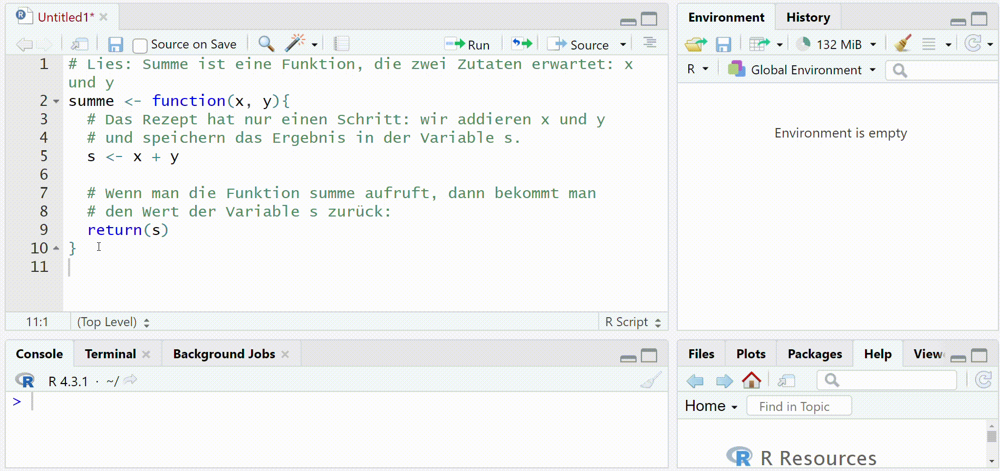
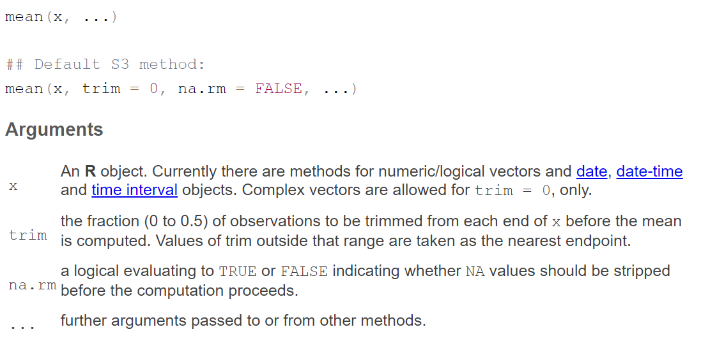

# Lies: Summe ist eine Funktion, die zwei Zutaten erwartet: x und y
summe <- function(x, y){
# Das Rezept hat nur einen Schritt: wir addieren x und y
# und speichern das Ergebnis in der Variable s.
s <- x + y
# Wenn man die Funktion summe aufruft, dann bekommt man
# den Wert der Variable s zurück:
return(s)
}11 Funktionen
R gibt uns Zugriff auf eine unfassbar große Anzahl an deskriptiven Statistiken, statistischen Tests und Grafiken. Das liegt an den unzähligen Funktionen, die andere für uns und wir für andere schreiben. Funktionen selbst zu schreiben kann relativ kompliziert werden. Dennoch ist es extrem hilfreich, zumindest rudimentär zu verstehen, wie Funktionen “funktionieren”.
Funktionen können wir uns wie ein Rezept vorstellen. Wir definieren erst, welche Zutaten eine Person braucht, die das Rezept nachkochen möchte. Beispielsweise braucht man für Spätzle Mehl, Wasser, Eier und Salz. Das Rezept definiert nun die Schritte, in denen diese Zutaten verarbeitet werden. Formal könnte man das Rezept folgendermaßen ausdrücken:
Zutaten: Mehl, Wasser, Eier, Salz
Schritte:
- Setze Wasser auf und bringe es zum Kochen
- Mische Mehl, Wasser, Eier und Salz
- Schabe den Teig in das kochende Wasser
- Schöpfe die fertigen Spätzle ab
Resultat: Spätzle11.1 Funktionen in R
Im Folgenden gehen wir genauer auf den Aufbau von Funktionen in R ein. Falls Dir die Beschreibung zu kurz oder unverständlich ist, keine Sorge! Ein oberflächliches Verständnis von Funktionen als Rezepte reicht im Folgenden erst einmal.
Funktionen in R sind sehr ähnlich aufgebaut wie unser obiges Pseudo-Rezept, sehen aber etwas anders aus:
spaetzle_zubereiten <- function(Mehl, Wasser, Eier, Salz){
- Setze Wasser auf und bringe es zum Kochen
- Mische Mehl, Wasser, Eier und Salz
- Schabe den Teig in das kochende Wasser
- Schöpfe die fertigen Spätzle ab
return(Spätzle)
}spaetzle_zubereiten ist der Name der Funktion (function), die die Zutaten Mehl, Wasser, Eier, Salz erwartet. Gegeben diese Zutaten werden dann die Schritte des Rezepts durchgeführt. Am Ende erhalten (return) wir dann die Spätzle.
Die obige Funktion ist kein echtes R. Wir können diese nicht ausführen, sie dient nur zu Demonstrationszwecken. Wir wollen uns daher eine einfachere Funktion anschauen, die wir auch tatsächlich in R nutzen können:
Kopiere den Code in ein Skript und führe ihn aus. R speichert dann das “Rezept” summe in seinem “Rezeptbuch”. Das heißt, wenn Du die Zutaten - die Zahlen x und y - hast und beide addieren möchtest, kannst Du hierfür nun das Rezept summe nutzen.
Video anzeigen
Funktionen rufen wir folgendermaßen auf:
summe(x = 1,
y = 4)[1] 5Wichtig ist, dass wir hier die Zutaten (x und y) übergeben. Wir erhalten das Ergebnis zurück. Die Variablen x und y hätten wir auch vorher definieren können:
x <- 1
y <- 4
summe(x = x,
y = y)[1] 5Sie können sogar andere Namen haben:
summand_1 <- 1
summand_2 <- 4
summe(x = summand_1,
y = summand_2)[1] 5R ist hier im Prinzip egal, ob wir Mehl auch tastächlich “Mehl” nennen oder “flour” dazu sagen. Wichtig ist nur, dass wir am Ende die richtige Zutat hinzugeben.
11.2 Warum das Ganze
Funktionen sind das zentrale Element, mit dem wir (fast) all unsere Probleme in R lösen können. Wenn wir einen Mittelwert berechnen wollen, dann gibt es dafür die mean - Funktion. Brauchen wir eine Standardabweichung, rufen wir die sd - Funktion auf. Mit plot können wir einfache Abbildungen erstellen, mit t.test einen t-Test und mit lm eine lineare Regression durchführen. Tatsächlich gibt es in R tausende und, wenn man Pakete mitzählt, abermillionen kleiner und großer Funktionen, die uns das Leben leichter machen.
Als Beispiel wollen wir uns die mean - Funktion etwas genauer anschauen. Hierfür erstellen wir wieder einen Vektor:
depression <- c(3, 5, 2, 1, 5, 4, 5, 3, 1, 1)Wir wollen nun den Mittelwert der Depressions-Werte berechnen. Die mean-Funktion macht genau das. Als Zutat erwartet sie nur unseren Vektor depression mit seinen Werten:
mean(depression)[1] 3Was passiert, wenn Du für folgenden Vektor den Mittelwert berechnen möchtest?
depression <- c(3, 5, 2, 1, NA, 4, 5, 3, 1, NA)Lösung anzeigen
mean(depression)[1] NAWir bekommen ein NA! Der Grund dafür ist, dass wir im Vektor mehrere fehlende Werte (NA) haben. R weiß nicht, was es mit diesen machen soll, daher gibt es uns einen fehlenden Wert zurück. Wir können die fehlenden Werte aber ganz einfach aus der Berechnung entfernen lassen, indem wir na.rm = TRUE zusätzlich in das “Rezept” übergeben:
mean(depression, na.rm = TRUE)[1] 3Falls Du mehr über eine Funktion und ihre Zutaten erfahren möchtest, kannst Du die Hilfe nutzen. Gibt hierfür beispielsweise ?mean in der Console ein und drücke Enter. Alternativ kannst Du die online-Version der Dokumentation aufrufen. Unter “Arguments” findest Du dort die Zutaten, die in die Funktion geworfen werden können.

11.3 Pakete
Wenn wir R installieren, bekommen wir bereits ein Rezeptbuch mit Funktionen direkt mitgeliefert. Dieses umfasst viele ganz basale Dinge wie “Tomatensoße”, “Brot” oder “Kartoffelpüree”. Gaumenfreuden wie Linsen mit Spätzle fehlen hier leider. Glücklicherweise gibt es unzählige zusätzliche Rezeptbücher, die wir kostenlos herunterladen können. In R nennen wir diese Rezeptbücher “Pakete”. So wie Rezeptbücher Sammlungen von Rezepten sind, sind Pakete Sammlungen von Funktionen. Mit diesen Funktionen können wir sehr fortgeschrittene Datenanalysen durchführen - von Strukturgleichungsmodellen über Modellbasierte Partitionierung bis hin zu Deep Learning. Wir können so sicherstellen, dass wir für unsere inhaltlichen Fragestellungen (z.B. “Welche Therapie wirkt bei Depressionen?”) immer die korrekte Analysemethode zur Verfügung haben.
Im Folgenden solltest Du Dir vor allem folgendes merken: Pakete sind Rezeptbücher. In ihnen finden wir Rezepte, die wir “Funktionen” nennen und die alle von uns irgendwelche Zutaten haben wollen. Wenn wir diese Zutaten an das Rezept übergeben, werden sie automatisch verarbeitet und wir bekommen das Ergebnis (z.B. einen Kuchen) zurück. Wie man Pakete installiert, lädt und nutzt werden wir im Detail im Kapitel Pakete besprechen.